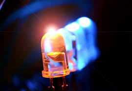
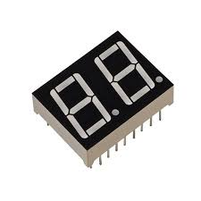
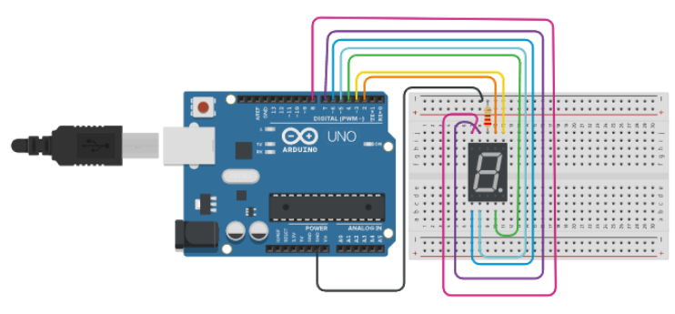

Resistores
dispositivo elétrico muito utilizado em eletrônica,
com a finalidade de limitar a corrente elétrica em um circuito.
dispositivo elétrico muito utilizado em eletrônica,
com a finalidade de limitar a corrente elétrica em um circuito.
determinar a resistência dos resistores com base
na interpretação das faixas de cor gravadas no resistor.
é um diodo semicondutor que quando energizado emite luz
é um tipo de display que mostra uma informação alfanumérica
O Tinkercad é uma ferramenta online, e gratuita, de criação e também de design de modelos em 3D.
O IDE arduino é plataforma para programação exclusiva para arduino com
codigo C++
A entrada analógica recebe o sinal de tensão entre 0V e 5V
e o "arduino" transforma essa faixa de tensão em uma faixa que vai de 0 à 1023.
entrada digital permite a leitura de componentes eletrônicos
que enviam sinais elétricos em 0V ou 5V.
é uma técnica utilizada para controle de dispositivos variando a intensidade.
saída digital utiliza o valor 5V para acionar um componente eletrônico
conectado à placa de Arduino e o valor 0V para desacionar este componente.
é um instrumento de medição que combina várias funções de medição em um único aparelho
é uma ferramenta de teste utilizada para medir dois ou mais valores elétricos,
principalmente, tensão (volts), corrente (amperes) e resistência (ohms).
as mais comuns são:
tensão elétrica (medida em volts – V).
corrente elétrica (medida em amperes – A).
resistência elétrica (medida em Ohms – Ω – letra Grega ômega).